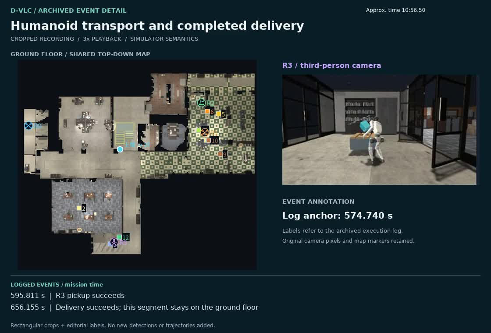

从协作执行到系统改进
多机器人系统能通过并行工作与能力互补完成复杂任务，但这种潜力并不自动形成协作。传统系统常为探索、建图等特定任务预设规则；人的自然语言指令却只给出目标，不会逐一规定操作步骤、资源归属和失败后的处理。面对未知环境，机器人还须交流发现，并将共同目标转化为各自可执行的动作。
D-VLC: Decentralized Vision-Language Collaboration for Heterogeneous Embodied Multi-Robot Systems in Unknown Environments 为此提出去中心化的异步感知、推理与行动框架：基于能力分解任务，以紧凑空间记忆和按需信息交换支持协作，再用机器人专属的执行模块落实统一决策。我们的双层任务沿用这一研究起点，也暴露了更长任务链中的持物等待、重复移动与有害并行。
从运行时协作进一步走向系统改进，关键是让这些失败改变下一轮软件，而不只让机器人在本轮重新规划。受递归自改进（RSI）的反馈结构启发，GPT-6 Astra 编程智能体把日志和测试结果转化为代码及验证工具的修订；研究者定义目标、约束范围并判断证据。迭代的是机器人系统，模型权重保持不变。
从 D-VLC 到 RSI 启发的 GPT 辅助系统演进
D-VLC 已展示异构机器人在未知家居环境中的分散探索，以及无人机发现门后请求移动机械臂协助。下方可切换查看家居探索、协作开门全局视图和另一段原始录屏中开门、无人机飞入的近景。当前四机框架在此基础上扩展长链任务，并由 GPT-6 Astra 辅助分析、修改和验证系统。
家具环境中的多机器人探索与目标发现；原始演示录像已为 4 倍速。
片段来源 ↗从 D-VLC 的按需协作出发，当前系统增加带依赖的任务程序、四机并行调度与失败恢复。RSI 启发的研究闭环改进的是机器人系统，而非 GPT 权重：它从一次具体运行开始，记录哪台机器人停住、依赖是否满足、额外移动和模型调用花了多少时间。GPT-6 Astra 对照代码与日志提出可检验的原因，修改调度、感知或恢复逻辑，并构建尽量贴近完整任务的回放、检查点和整轮测试。只有收益能归因、且未引入新阻塞的修改才保留；否则缩小范围或回退。实验记录与限制。
例如，为减少重复取物，系统尝试让空闲机器人提前搬运或靠近后续目标。同一检查点的完成时间由 422.1 秒降至 352.1 秒；但另一种提前站位会挡住队友，随后被移除。最终整轮虽完成，预测取物事件却未触发，因此不能宣称该策略已带来整轮加速。另一次参考图实验增加了误报和识别延迟，也未合入。这样的保留与回退，使“自改进”成为受证据约束的研究过程。
系统架构：在线协作执行与 RSI 启发的系统改进
这里有两个相连的闭环：机器人根据现场反馈调整任务执行；GPT-6 Astra 依据实验结果修订下一版软件。在线执行闭环由总任务生成目标目录和带依赖的子任务，视觉在现场确认实例。最新工厂与警局实验中，Qwen3.8 Flash Next 负责在线子任务分解、根据执行回执纠错与评估并行方案；Qwen3.5-4B 负责动作与探索。协调器按依赖、资源和机器人能力分工。GPT-6 Astra 参与的是代码与测试迭代，不参与这两轮的在线子任务推理；历史录像保留当时真实的模型标注。
这里的并行目标是缩短完成时间，而不是使最多机器人同时忙碌。机器人抓住物体却等不到接收方时，可考虑临时放置后帮助其他步骤；靠近未来目标也只有在避免阻挡队友和多余往返时才有价值。工厂任务在探索中推进维修与备料；警局任务验证了更长的依赖链。下图区分执行中的任务反馈与 GPT-6 Astra 修订下一版软件的研究反馈。
权重不变；研究者决定接受。
演进后的框架：多场景多机器人集群协作
演进后的框架以共享任务程序、现场观测和异步分工组织四机协作。先看四机 2×2 同屏历史录像，再看工厂探索期间并行维修与备料的片段；旧录像保留当时真实模型标注。警局与工厂的完整任务录像见下一节。
R0 侦察无人机、R1 飞行机械臂、R2 移动机械臂、R3 人形机器人同时显示；由原协作窗口和当时日志制作，保留该轮真实模型标注。
单独播放视频 ↗R2 安装维修件，R3 搬运阀门；片段对应原片约 00:26–00:51。
R1 接通电源，R2 随后启动设备并交付成品；片段对应原片约 01:03–01:25。
两段均裁自同一工厂成功录像；画面中文为原始仿真界面。片段来源 ↗

确认二层授权盒，并关闭常规搜索。
Qwen3.8 Flash Next · 完整视觉打开片段视频 ↗连接临时供电，与 R2 装料并行。
GPT-5.6 medium · 历史录像打开片段视频 ↗近距离抓取成品，随后启动交付；片段结束时尚未交付。
GPT-5.6 low · 完整视觉对照打开片段视频 ↗其他协作片段
完整实验：工厂、警局与早期配置
工厂与警局是并列的任务实例。相同的冻结代码从各自任务描述生成目标与依赖，利用现场视觉、共享状态和异步分工完成操作。两轮成功展示了算法在这两类任务上的泛用性；任务差异不用于比较场景难度。
| 场景 | 完成 | 总耗时 | 找齐目标 | 成功操作 | 导航/执行失败 |
|---|---|---|---|---|---|
| 工厂 | 是 | 769.5 秒 | 659.5 秒 | 12 | 4 |
| 警局 | 是 | 887.8 秒 | 408.4 秒 | 24 | 11 |
任务不同，耗时不作直接排名。两轮均完成，Unity 操作拒绝为 0；导航和执行失败仍计入记录。运行证据 ↗
早期实验录像
维修、并行备料、装配、交付及停机断电；保留原始仿真界面。
下载录像 ↓查看工厂总任务与约束
协同探索停产工厂，修好装配机 M01，制作阀管总成并交付到大门内侧的 D01，最后停机断电。需确认 M01、C01、D01、K01，以及 E01/E02/E03 中的一个电源、P01/P02/PIPE03/P04 中的一根管段、V01–V05 中的一只阀门，共七项目标。同类找到够用的即可，其余位置未知。
初始机器已隔离、维修舱已打开，电源未接。K01 是整件更换的组件，装进维修槽；管段和阀门分别送入备料夹具。维修与两路备料可边找边做；全部完成后才接电开工。
从 M01 出料托盘拉出成品后，取件者已持有成品，应直接交付 D01，不再搜索或另抓一次。交付后用 C01 停机，再拔掉实际连接的电源；机器人按能力与现场反馈自主分工。
查看警局总任务与约束
协同探索警局，修好钥匙切割机，按工单制作一批备用钥匙；检查合格后送交接台，结束时停机断电。表面标签有 ORDER、CUTTER、CONTROL、KEY、PERMIT、POWER、DELIVERY、KEYS；维修模块候选为 M-17/M-23/M-41，毛坯候选为 B-AL/B-CU。模块依据现场诊断，毛坯依据工单选择，位置均未知。
POWER 初始未接，检修前无需先拔电。先确认断电与隔离，用 KEY 插入、转锁、打开维修舱；更换匹配模块后装入匹配毛坯，再接电。PERMIT 可同时送至 CONTROL 登记。
读完工单、修好机器、装好毛坯、接好电且登记授权后，由一台机器人持续按住授权按钮，另一台启动 CUTTER；确认启动成功后才能松开。KEYS 制成并检查合格后取走交付；交付后在 CONTROL 停机，最后拔掉 POWER。机器人按能力与现场反馈自主分工。
早期完整实验录像
以下录像使用早期配置，保留当时真实的模型标注。默认播放一轮历史实验的地图与任务图重排版；四机 2×2 同屏版见第 04 节。
其他历史录像
根据历史原片重排，放大共享地图中的机器人图标；共享子任务来自录制日志，未重跑仿真。
下载重排版完整录像 ↓查看未经编辑的原始窗口 ↗GPT-6 Astra 作为研发智能体
GPT-6 Astra 在 RSI 启发的研究闭环中检查代码、诊断日志、修订框架、构建测试并整理结果；最新工厂和警局实验的运行时子任务推理由 Qwen3.8 Flash Next 完成。研究者持续提供任务目标与现场观察，并决定修改边界和接受标准。两者的分工使“机器人停住”成为可追溯的工程问题：是接收条件、任务依赖、导航，还是推理队列造成等待，需由事件与时间记录区分。局部测试通过并不等于整轮更快；现有记录也不足以量化节省了多少人工工时。